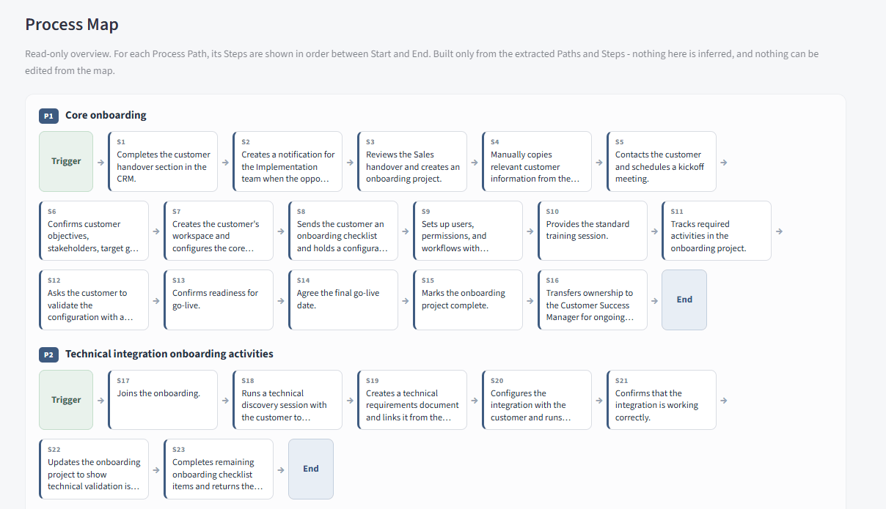
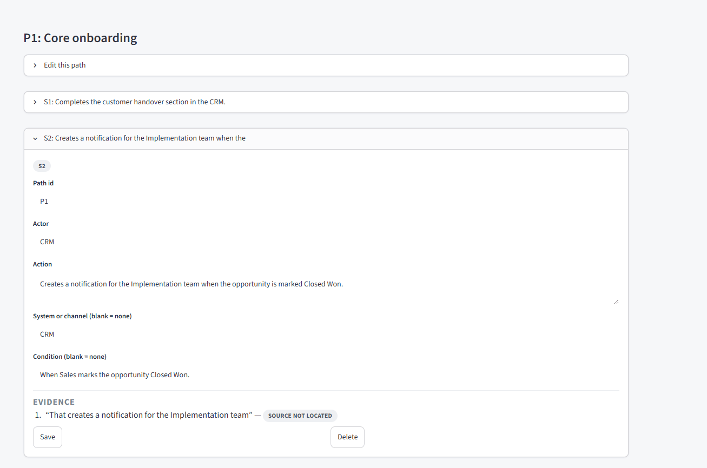
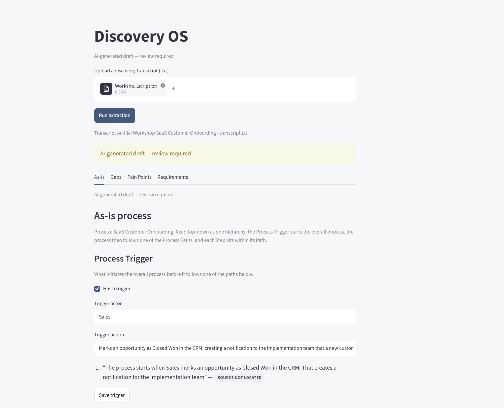
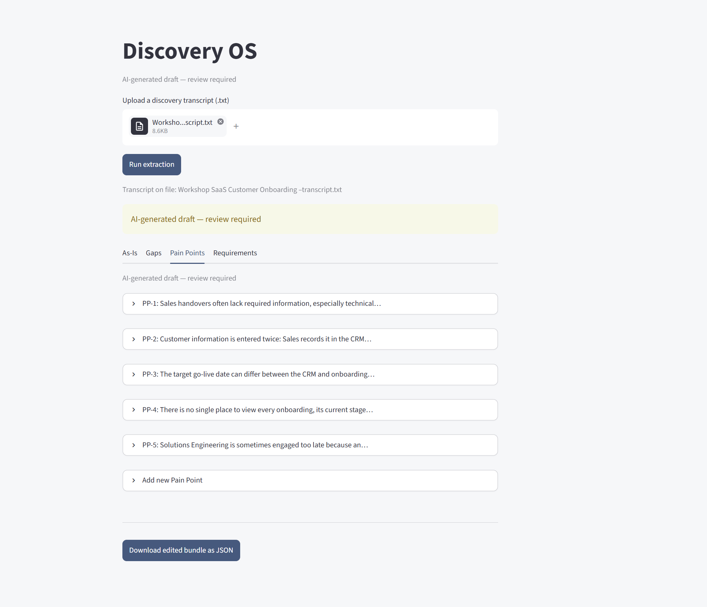
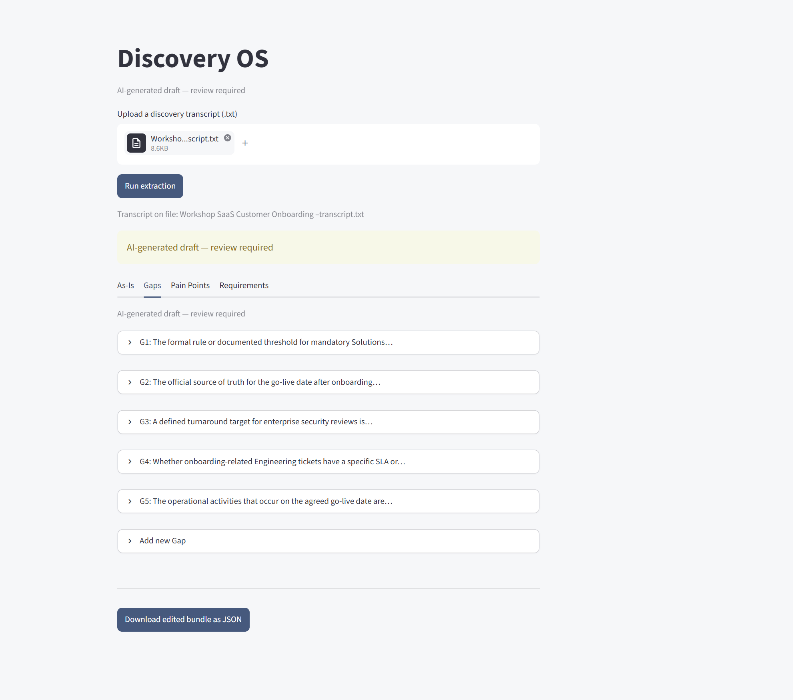
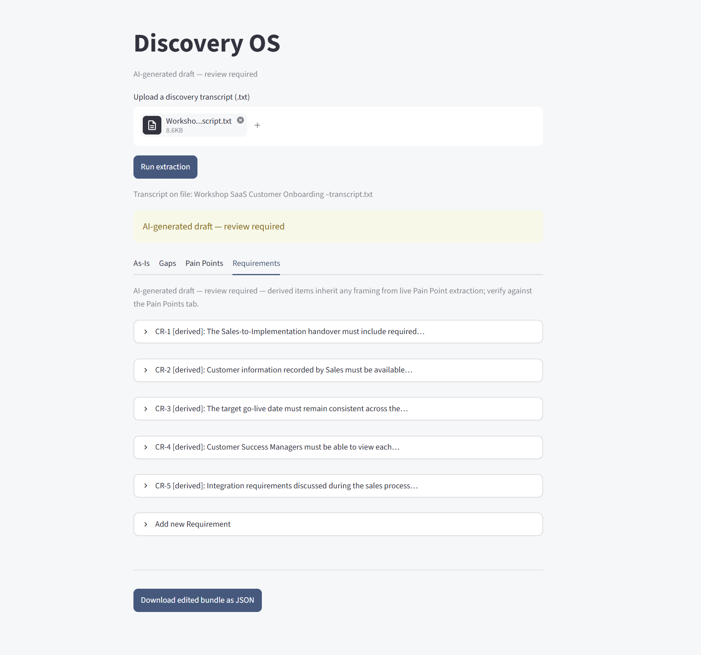

Case study
Discovery OS
AI-powered discovery for enterprise transformation teams
Discovery OS helps transformation teams move faster from workshop to action. It turns discovery transcripts into structured As-Is processes and visual process maps, surfaces pain points and unresolved gaps, and generates evidence-grounded requirements — reducing the manual analysis required after workshops while preserving source evidence for human review.


Problem
Enterprise transformation discovery generates hours of valuable but unstructured conversation. After each workshop, teams still spend significant time manually turning that discussion into usable outputs: reconstructing the current-state process and its variants, identifying pain points, tracking what remains unresolved, and translating findings into requirements.
That work is repetitive and time-consuming, but simply automating it with an LLM creates another problem: transformation decisions cannot safely rely on outputs that invent missing detail, lose their source, or hide uncertainty.
The product question was: how can AI accelerate the journey from workshop to usable transformation outputs while keeping the work grounded, traceable and under human control?
Product
Discovery OS takes a workshop transcript and produces four structured transformation outputs:
- As-Is — the current-state trigger, process paths, ordered steps and a read-only visual process map
- Pain Points — operational friction surfaced during discovery
- Gaps — information or decisions the workshop leaves unresolved
- Requirements — evidence-grounded requirements derived from the discovery
Each generated item retains the transcript evidence it came from. The analyst reviews and corrects the interpretation — reclassifying, rewording, adding or removing items — without rewriting the underlying source quotes.
How it works
Transcript → structured LLM extraction → deterministic citation and provenance enrichment → an evidence-grounded output bundle → an editable Streamlit review interface.
Every output is a defined structure — typed fields, stable IDs, schema-checked JSON — not free text. Requirements are generated from the extracted Pain Points, preserving traceability from evidence through identified problem to requirement. Provenance enrichment is deterministic text matching, not a second model: it locates each evidence quote in the transcript and records its speaker and timestamp.
Grounding & human review
Human review is a design principle here, not a disclaimer added afterwards.
- Unknown stays unknown. Extraction is instructed not to infer systems, channels or process detail the workshop did not establish; a hedge in the transcript is kept as uncertainty, not promoted to fact.
- Evidence is read-only. Source quotes cannot be edited in the interface. Analytical fields — classification, wording, structure — can.
- Provenance is preserved. Each quote is matched to its transcript turn and validated as verbatim text. When the match fails, the interface shows
SOURCE NOT LOCATEDrather than guessing an attribution. - Drafts are labelled as drafts. Every output is marked “AI-generated draft — review required” throughout the interface.
Evaluation approach
Development was gold-first: hand-built Gold datasets fixed the correct answer before any prompt was judged against it, backed by a deterministic regression suite.
Prompt versions were tested one at a time, one variable per change, and reviewed on precision, recall and negative controls — transcripts that should produce nothing. A version was adopted only if it beat the current one on that evidence; being newer was not a reason to accept it.
The Gap extractor is the clearest example. Its best version reached 100% precision and 80% recall with the negative control passing. A later version regressed to 40% recall, produced a duplicate and a false positive, and failed the negative control — so it was rejected, and Gap extraction was held at the earlier level and documented as a known limitation, mitigated by letting analysts add and edit gaps directly.
At the v0.1 freeze the repository holds 183 deterministic assertions across 5 test files, all passing.
Product screenshots




What I built
- Product concept and output model — an evidence-grounded discovery assistant; four structured artefacts with stable IDs and schema-checked JSON.
- Extraction design — the prompts and structured-output contracts for each extractor, including deriving Requirements from the extracted Pain Points while preserving traceability.
- Gold datasets and evaluation — hand-built Gold and negative controls for As-Is steps, Pain Points, Gaps and Requirements, and the regression suite that gates every prompt change.
- Provenance enrichment — deterministic matching of each evidence quote to its transcript turn, with located / ambiguous / not-located states.
- Streamlit review interface — run extraction, tabbed review of all four outputs, add / edit / delete with IDs preserved, broken-reference warnings, JSON export; analytical fields editable, source evidence immutable.
- Process-map UX — a read-only, dependency-free visual of each path from trigger to end.
- Testing — end-to-end pipeline tests plus the 183-assertion deterministic regression suite, and a paid end-to-end run on a real transcript at the freeze.
Tech: Python · OpenAI API · Streamlit · schema-based JSON outputs
Current status
Discovery OS v0.1 — Basic Working Version.
Discovery OS v0.1 is a working end-to-end product. It runs on real workshop transcripts, produces all four structured outputs, preserves citation and provenance, supports human review and editing, and includes read-only process visualisation.
At the v0.1 freeze, 183/183 deterministic assertions passed, alongside a successful real-transcript end-to-end smoke test.
Current stage: working v0.1, ready for further product iteration and validation with transformation users.